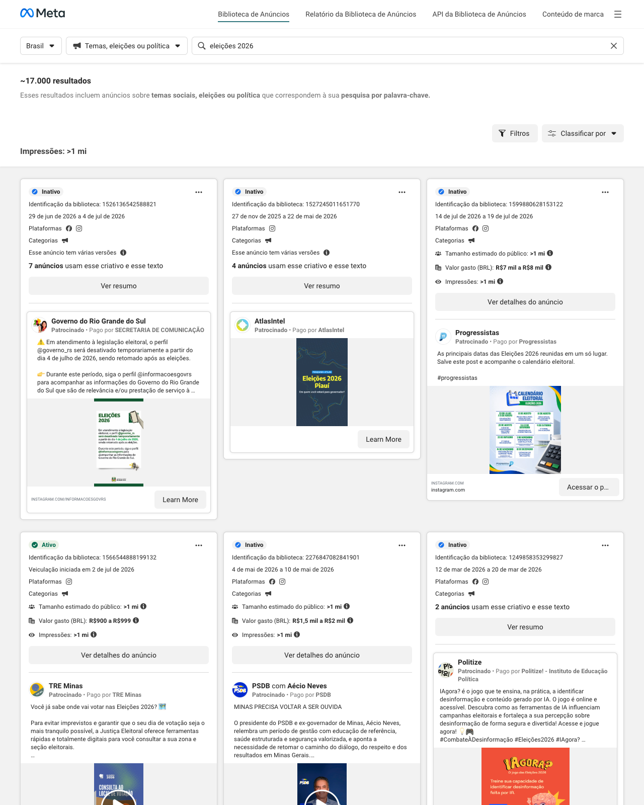
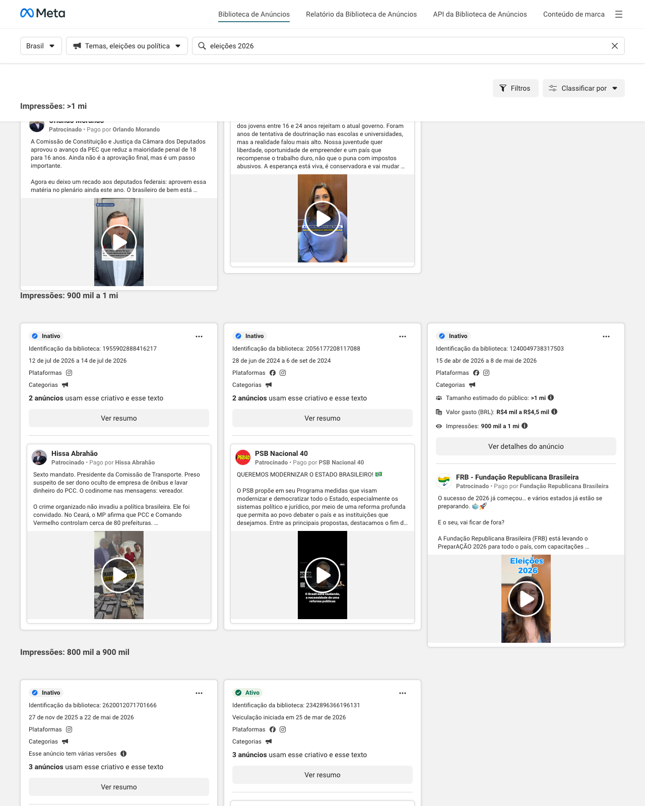

① 广告新闻概览 Advertising News Overview
重点客户 · Key Clients (Secom / Caixa / BB / MS / Petrobras)
卫生部将HPV疫苗接种宣传活动延长至2026年底——Oeste Mais
Ministério da Saúde estende campanha de vacinação contra o HPV até o fim de 2026 Oeste Mais
卫生部将HPV疫苗接种宣传活动延长至2026年底——西部更多
宣传活动主张巴西国家石油公司及能源行业重新国有化——TVT新闻
Campanha defende reestatização da Petrobras e do setor de energia TVT News
宣传活动主张巴西国家石油公司和能源部门重新国有化 - TVT新闻
巴西国家石油公司发布9.1亿雷亚尔广告公司招标公告——Jovem Pan
Petrobras lança edital de R$ 910 milhões para agências de publicidade Jovem Pan
巴西国家石油公司发布9.1亿雷亚尔广告公司招标公告 青年之声电台
巴西国家石油公司宣布投入9.1亿雷亚尔广告费，以强化该公司在巴西人日常生活中的角色 - Times Brasil | CNBC
Petrobras anuncia R$ 910 milhões em publicidade para reforçar o papel da empresa no cotidiano dos brasileiros Times Brasil | CNBC
巴西国家石油公司宣布投入9.1亿雷亚尔广告费以强化公司在巴西人日常生活中的角色 Times Brasil | CNBC
巴西国家石油公司发布9.1亿雷亚尔广告招标 - 《环球报》
Petrobras lança edital de R$ 910 milhões para propaganda O GLOBO
巴西国家石油公司发布9.1亿雷亚尔广告招标 O GLOBO
社会传播秘书处推出广告“巴西的驾照已就绪。” - 广告界大腕
SECOM estreia campanha “A CNH do Brasil tá habilitada.” Grandes Nomes da Propaganda
联邦政府传播秘书处推出“巴西驾照已就绪”宣传活动 广告界大腕
2026年全国竞选：工会要求为巴西银行及该行业其他机构举行新的公务员招考 - Estratégia Concursos
Campanha Nacional 2026: Sindicatos reivindicam novo concurso público para o Banco do Brasil e demais instituições do setor Estratégia Concursos
2026年全国竞选：工会要求为巴西银行及行业其他机构举行新的公务员招考 策略备考
未经招标，巴西银行与巴西邮政签署23亿雷亚尔合同——UOL经济版
Sem licitação, Banco do Brasil fecha contrato de R$ 2,3 bi com os Correios UOL Economia
巴西银行未经招标与巴西邮政签署23亿雷亚尔合同 - UOL经济版
其他客户 · Other Clients (地方银行 / 部委 / Sistema S / 州市)
巴西出口投资促进局宣布1.3亿雷亚尔计划以多样化出口 Agrimidia
ApexBrasil anuncia plano de R$ 130 milhões para diversificar exportações Agrimidia
巴西出口投资促进局宣布1.3亿雷亚尔计划以推动出口多元化——农业媒体
巴西旅游部任命广告与数字扩展协调部门的新负责人 - Brasilturis
Ministério do Turismo nomeia substituto para coordenação de publicidade e expansão digital Brasilturis
旅游部任命广告与数字扩展协调部门的新负责人 Brasilturis
巴西小微企业支持服务局与迪拉·佩斯合作开展活动，展示如何帮助小企业成功 - 费尔南多·瓦斯康塞洛斯
CAMPANHA DO SEBRAE COM DIRA PAES MOSTRA COMO AJUDA PEQUENOS NEGÓCIOS A DAREM CERTO Fernando Vasconcelos
巴西小微企业服务中心携手迪拉·帕伊斯推出广告，展示如何助力小企业成功——费尔南多·瓦斯康塞洛斯
巴西旅游部任命广告与数字扩展协调部门的新负责人 - O TEMPO
Ministério do Turismo designa substituto para coordenação de publicidade e expansão digital O TEMPO
巴西旅游部任命广告与数字扩展协调部门的新负责人 - O TEMPO
View360为东北银行制作的广告庆祝成果 - 广告界大腕
Campanha da View360 para o Banco do Nordeste celebra resultados Grandes Nomes da Propaganda
View360为东北银行打造的宣传活动庆祝成果 广告界大咖
教育部与国家机构联合发起宣传活动——广告界大咖
Ministério da Educação e Agência Nacional lançam campanha Grandes Nomes da Propaganda
教育部与国家机构联合发起宣传活动——广告界大咖
巴西旅游局和巴西小微企业支持服务局推出名为DesBRAva的新宣传活动 Grandes Nomes da Propaganda
Embratur e Sebrae criam nova campanha chamada DesBRAva Grandes Nomes da Propaganda
巴西旅游局与小微企业服务中心联合推出名为“DesBRAva”的新宣传活动——广告界大咖
DeBrito Brasil签署旅游部广告 - 广告界大腕
DeBrito Brasil assina campanha do Ministério do Turismo Grandes Nomes da Propaganda
DeBrito巴西公司为旅游部签署宣传活动 广告界大咖
② 重点事件：Q3 巴西大选 Key Event: Q3 2026 Elections
选举动态 · 合规与竞媒 Compliance & Competitive Media (TSE / 平台 / 规则)
联邦区地区选举法院发布2026年选举宣传指南手册 - 联邦区地区选举法院
TRE-DF lança cartilha com orientações sobre propaganda eleitoral para as Eleições 2026 Tribunal Regional Eleitoral do Distrito Federal
联邦区地区选举法院发布2026年选举宣传指南手册 联邦区地区选举法院
2026年大选：最高选举法院确定候选人竞选开支上限；查看北里奥格兰德州金额 - BG博客
ELEIÇÕES 2026: TSE define limites de gastos de campanha para candidatos; confira valores para o RN Blog do BG
2026年选举：最高选举法院确定候选人竞选支出上限；查看北里奥格兰德州金额 BG博客
最高选举法院公布2026年大选竞选支出限额 - 最高选举法院
TSE divulga limites de gastos de campanha para as Eleições Gerais de 2026 Tribunal Superior Eleitoral
最高选举法院公布2026年大选竞选支出限额 最高选举法院
走进选举：了解为选举宣传制定的规则 - 最高选举法院
Por Dentro das Eleições: conheça as regras estabelecidas para a propaganda eleitoral Tribunal Superior Eleitoral
走进选举：了解选举广告宣传的既定规则 - 最高选举法院
伯南布哥州选举法院批准跨性别女性候选人资格，驳回配额欺诈指控
Corte rejeitou ação do PSDB/Cidadania contra candidata do PSB e validou candidatura da mulher trans nas eleições de 2024
法院驳回社民党/公民党对巴西社会党候选人的诉讼，确认2024年选举中跨性别女性候选人资格有效
在与外交官会面时，弗拉维奥·博索纳罗以已被高等选举法院驳斥的指控攻击电子投票箱
Flávio Bolsonaro ataca urnas eletrônicas com acusações já desmentidas pelo TSE
O senador Flávio Bolsonaro (PL-RJ), pré-candidato à Presidência da República, atacou nesta terça-feira (21) as urnas eletrônicas com acusações já desmentidas pelo Tribunal Superior Eleitoral (TSE).
Em reunião com diplomatas, o filho do ex-presidente Jair Bolsonaro (PL) disse que as urnas eletrônicas brasileiras têm
弗拉维奥·博索纳罗以已被高等选举法院驳斥的指控攻击电子投票箱
参议员弗拉维奥·博索纳罗（自由党-里约热内卢州），共和国总统预候选人，于本周二（21日）以已被高等选举法院驳斥的指控攻击电子投票箱。
在与外交官会面时，这位前总统雅伊尔·博索纳罗（自由党）之子称巴西的电子投票箱存在
帕尔马斯集中了托坎廷斯州18%的选民；查看最大和最小的选区
Palmas lidera ranking dos maiores colégios eleitorais do Tocantins
Carlos Eller/Ascom/TRE-TO
Palmas concentra cerca de 18% dos eleitores do Tocantins e lidera o ranking dos maiores colégios eleitorais do estado para as Eleições Gerais de 2026. Os dados definitivos do eleitorado foram divulgados pelo Tribunal Superior Eleitoral (TSE).
Ao todo, o Tocantins tem 1.182.307 eleitoras e eleitores ap
帕尔马斯领跑托坎廷斯州最大选民群体排名——卡洛斯·埃勒/托坎廷斯地区选举法院新闻办公室 帕尔马斯集中了托坎廷斯州约18%的选民，在2026年大选州内最大选民群体排名中位居首位。最终选民数据由最高选举法院公布。托坎廷斯州共有1,182,307名选民
Quaest民调：卢拉在东南部表现提升，弗拉维奥·博索纳罗在福音派中保持优势；查看详细数据
Presidente Luiz Inácio Lula da Silva (PT) e o senador Flávio Bolsonaro (PL)
Divulgação
O detalhamento da pesquisa Quaest divulgada na última quarta-feira (15) mostra como variaram as intenções de voto de Lula (PT) e Flávio Bolsonaro (PL) nos segmentos do eleitorado.
O levantamento divulgado na semana passada com a simulação de um 2º turno entre os dois mostrou que Lula venceria Flávio Bolsona
总统路易斯·伊纳西奥·卢拉·达席尔瓦（劳工党）与参议员弗拉维奥·博索纳罗（自由党） 披露 上周三（15日）公布的奎斯特民调细节显示，卢拉（劳工党）与弗拉维奥·博索纳罗（自由党）在不同选民群体中的投票意向变化。上周公布的两人第二轮对决模拟调查显示，卢拉将战胜弗拉维奥·博索纳罗。
2026年大选：最高选举法院开放政党代表大会期 - Brasil 61
Eleições 2026: TSE abre período de convenções partidárias Brasil 61
2026年大选：最高选举法院开放政党代表大会期 - Brasil 61
高等选举法院保障2026年选举公正性的举措被米纳斯吉拉斯州地区选举法院采纳——高等选举法院
Iniciativa do TSE pela integridade das Eleições 2026 é adotada pelo TRE-MG Tribunal Superior Eleitoral
最高选举法院为保障2026年选举公正性发起的倡议被米纳斯吉拉斯州地区选举法院采纳 最高选举法院
2026年选举：选举法院将评估政党代表权以分配广播、电视和辩论时间 - 最高选举法院
Eleições 2026: Justiça Eleitoral vai aferir representação partidária para tempo de rádio e TV e debates Tribunal Superior Eleitoral
2026年选举：选举法院将评估政党代表权以分配广播、电视时段及辩论资格——高等选举法院
2026年选举：最高选举法院与数字平台签署合作协议，扩大打击虚假信息力度——最高选举法院
Eleições 2026: TSE e plataformas digitais firmam parcerias para ampliar combate à desinformação Tribunal Superior Eleitoral
2026年大选：最高选举法院与数字平台建立合作以加强打击虚假信息——最高选举法院
竞媒动态 · Meta 政治/选举广告 Meta political & issue ads
📊 事实汇总 · Fact Summary （本期样本 24 条，来自关键词：eleições 2026、Lula、Bolsonaro、TSE；非全量市场）
- 在投 / 已停：1 条在投(Ativo) · 23 条已停(Inativo)；共涉及 13 个不同出资方
- 广告主类型分布：政党 Partidos 11 · 政府机构 Governo 1 · 选举司法 TSE/TRE 1 · 民调/研究 Pesquisa 1 · 公民社会 Sociedade 1 · 其他/候选人 Outros 9
- 金额：10/24 条披露了花费(Valor gasto)；观察到的花费区间：R$1,5 mil a R$2 mil、R$100 mil a R$125 mil、R$10 mil a R$15 mil、R$20 mil a R$25 mil、R$25 mil a R$30 mil、R$400 mil a R$450 mil、R$45 mil a R$50 mil、R$7 mil a R$8 mil、R$900 a R$999；展示量(Impressões)普遍 >1 mi
- 时间跨度：2020-10 → 2026-07
- 特征观察：选举司法(TSE/TRE)与政府机构以「投票指引/合规告知」类广告为主；政党/候选人以议题宣传为主；单条披露花费多在数百至数千雷亚尔量级，属小额高频投放。
创意/广告位截图 · Creatives & placements (Meta Ad Library grid)


在投广告（点击展开详情）· Active ads (click to expand) — 已停投 23 条不再列出
ProgressistasAtivo · 💰R$900 a R$999
出资方 Pago por: Progressistas
As principais datas das Eleições 2026 reunidas em um só lugar. Salve este post e acompanhe o calendário eleitoral. #progressistas
2026年选举主要日期汇总在一处。收藏此帖并关注选举日历。#进步党
政情动态（背景）· Political Context
西多尼奥的得力助手离开政府传播秘书处，加入卢拉竞选团队
Publicitário Tiago César era o nº 2 da Secretaria de Comunicação da Presidência (Secom). Agora, vai para a campanha de Lula à reeleição
广告人蒂亚戈·塞萨尔曾任总统府传播秘书处二号人物，现转投卢拉连任竞选
2026年选举候选人报名期于本周一（20日）开始——联邦区地区选举法院
Período de escolha de candidaturas para as Eleições de 2026 começa nesta segunda-feira, 20 Tribunal Regional Eleitoral do Distrito Federal
2026年选举候选人提名期于本周一（20日）开始 联邦区地区选举法院
2026年选举候选人登记将通过CANDex系统在线完成 - 联邦区地区选举法院
Registro de candidaturas nas Eleições 2026 será feito online via CANDex Tribunal Regional Eleitoral do Distrito Federal
2026年大选候选人登记将通过CANDex系统在线进行 联邦区地区选举法院
马里尼奥淡化瓦尔德马尔关于弗拉维奥的言论：“候选人是雅伊尔”
Senador diz que declaração do presidente do PL foi retirada de contexto e afirma que candidatura do Flávio já está consolidada
参议员称自由党主席的言论被断章取义，并表示弗拉维奥的候选人资格已稳固
瓦尔德马尔确认特蕾莎·克里斯蒂娜拒绝担任弗拉维奥的副手
Presidente do PL diz que senadora prioriza candidatura à Presidência do Senado e mantém conversas com partidos para compor a chapa
自由党主席称参议员优先考虑参议院议长候选人资格，并与各党派保持对话以组建竞选团队
尼加拉瓜议会启动计划以遏制国内反对派
Assembleia Nacional da Nicarágua iniciou discussões para colocar em prática os planos do presidente Daniel Ortega sobre o fim das eleições
尼加拉瓜国民议会开始讨论落实总统丹尼尔·奥尔特加关于结束选举的计划
雷南·桑托斯的施政纲领提出“去贫民窟化”、打击有组织犯罪、合并市镇及取消家庭补助金
Pré-candidato do Missão à Presidência da República, Renan Santos
Reprodução
O pré-candidato à Presidência da República Renan Santos (Missão) apresentou nesta terça-feira (21) o seu plano de governo para as eleições de 2026.
Sob o título "O futuro é glorioso", o documento reúne propostas inspiradas no governo de Nayib Bukele, presidente de El Salvador, como a construção de presídios de segura
使命党总统预候选人雷南·桑托斯
转载
总统预候选人雷南·桑托斯（使命党）于本周二（21日）提交了其2026年选举施政纲领。
这份题为“未来是光荣的”文件汇集了受萨尔瓦多总统纳伊布·布克尔政府启发的提案，例如建造安全监狱
雅伊尔·博索纳罗的前部长拒绝担任弗拉维奥·博索纳罗的副总统候选人
A senadora Tereza Cristina (PP-MS) negou o convite para ser candidata a vice-presidente na chapa do senador Flávio Bolsonaro (PL-RJ). A informação é do presidente do PL, Valdemar Costa Neto.
O pré-candidato do PL busca uma candidata a vice num dos partidos do Centrão como União Brasil, Progressista ou Republicanos, mas até agora não teve sucesso.
Tereza e Valdemar se reuniram nesta terça-fei
参议员特蕾莎·克里斯蒂娜拒绝了成为弗拉维奥·博索纳罗参议员竞选搭档的邀请。该消息由自由党主席瓦尔德马尔·科斯塔·内托透露。自由党的预候选人正在寻求来自中间派政党（如巴西联盟党、进步党或共和党）的副总统候选人，但至今未成功。特蕾莎和瓦尔德马尔在本周二会面